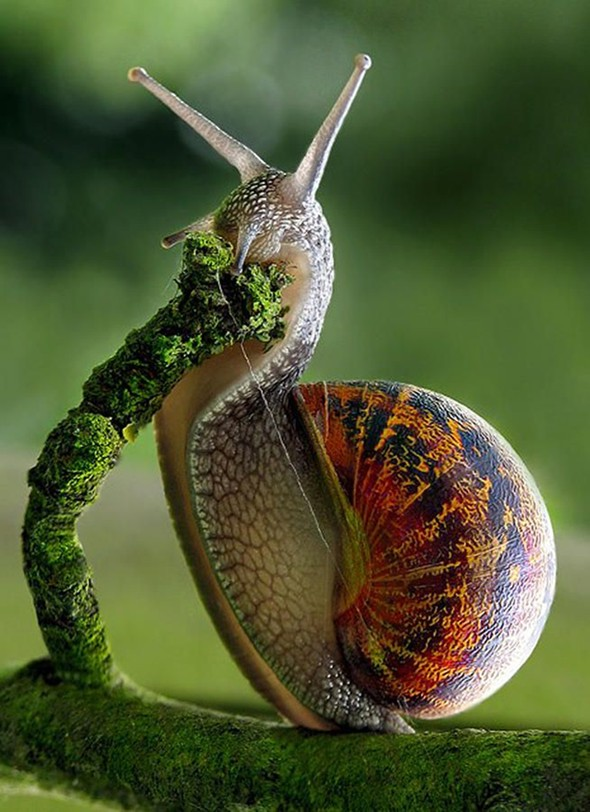

Пока космонавты осваивали орбиту, учёные искали способ решить одну из самых неприятных проблем космических полётов — укачивание. И тут на помощь пришли улитки. Эти медлительные моллюски оказались идеальны для изучения работы вестибулярного аппарата.
Помочь космонавтам справиться с «болезнью движения» — тем самым мучительным состоянием, когда после возвращения с орбиты человек не может нормально повернуть голову или идёт заплетающимися ногами. Проблема в том, что в невесомости вестибулярный аппарат перестаёт получать привычную нагрузку от гравитации и не может поддерживать равновесие.
Их орган равновесия (статоцист) устроен по тому же принципу, что и человеческий, но состоит всего из тринадцати клеток. Это делает его удобным для изучения — можно проследить, как гравитационные рецепторы реагируют на отсутствие веса.
Учёные из Института медико-биологических проблем РАН под руководством профессора Гиви Горгиладзе начали готовить улиток к полёту в 2005 году, а первые эксперименты проводились на станции «Мир» и позже на МКС.
Улиток для экспериментов собирали на полях Грузии. Выбор был прагматичным: южные виды крупнее и многочисленнее, чем подмосковные. Их размещали в специальных вентилируемых контейнерах и доставляли на орбиту грузовыми кораблями «Прогресс». В невесомости улитки проводили от нескольких дней до 163 суток.
После 16-суточного полёта на спутнике «Фотон-М2» у улиток обнаружили повышенную возбудимость волосковых клеток органов гравитации. Это совпало с данными, полученными ранее на обезьянах, и доказало, что на простейших животных можно ставить эффективные и менее затратные эксперименты.
Улиткам перед полётом вырезали участок раковины размером 5×5 мм алмазным диском. С орбиты улитки вернулись с полностью восстановленными раковинами. Правда, у регенератов отсутствовал верхний роговой слой. Это показало, что невесомость не блокирует регенерацию, хотя и замедляет её на первых порах.
Космонавты Салижан Шарипов и Лерой Чиао, принимавшие улиток на МКС в 2005 году, признавались, что присутствие живых существ с Земли стало для них своего рода психологической поддержкой. Даже медлительные моллюски в коробке с кислородом напоминали о доме.
Эксперименты с улитками внесли важный вклад в космическую физиологию. Они показали, что гравитационные рецепторы обладают пластичностью. Кроме того, улитки доказали, что регенерация тканей в космосе возможна, хотя и имеет свои особенности.